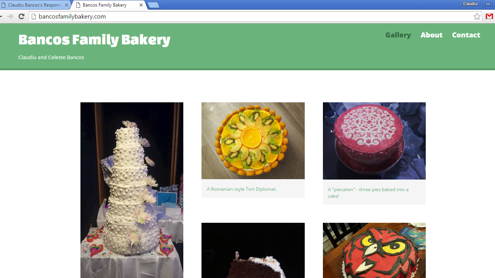
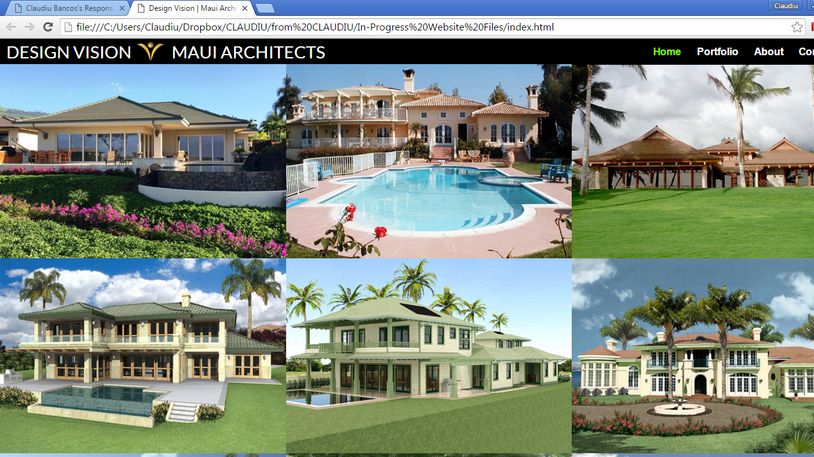

PORTFOLIO
-

Marketing Page
This project shows the front page of a marketing website meant for a specfic business I'm interested in.
-

Search Page
This project searches through a specific database to find information that the user is trying to look up.
-

Travel App
This project compares travel times based on different transportation methods and tells you the best one.
-

Map of Favorite Spots
This project uses mapping apis to plot points for my favorite spots in the city for a do-it-yourself walking tour.
-

Photo Gallery
This project shows pictures from a recent trip to the viewer and allows them to easily navigate through photos.
-

Calculator
Someone can enter in the numbers they want, and press the big blue button and get the result.
-

Layout Tutorial Video
A video tutorial on css layouts, including display types, floats, and margins and padding.
-

CSS Video Collection
This project embeds css tutorial videos from numerous sources in an attempt to collect the best css instructional videos.
-

Employee Database
This project accesses employee information from a database and displays it in an interactive HTML table.
-

Fake Slow Website
This project pranks its visitors by simulating a web app that takes a very long time to load.
-

Sticky Notes
Write and save notes for yourself on this virtual pad of sticky notes!
-

Blog Post Form
This project uses an HTML form to allow the user to write a blog post which it then posts to a website.
-

Two-Step Verification
This project uses two-factor authentication by asking the user for an email address and a password, and then sending the user a text message with a sign-in code.
-

Bancos Family Bakery Website
This is a website I created for my home bakery. Visit it at BancosFamilyBakery.com.
-

Design Vision: Maui Architects Website
This is a website I created for my client Jim, who I met on the Treehouse forums. He runs an architecture firm called Design Vision, based in Maui, Hawaii. This site will be live on the web soon.